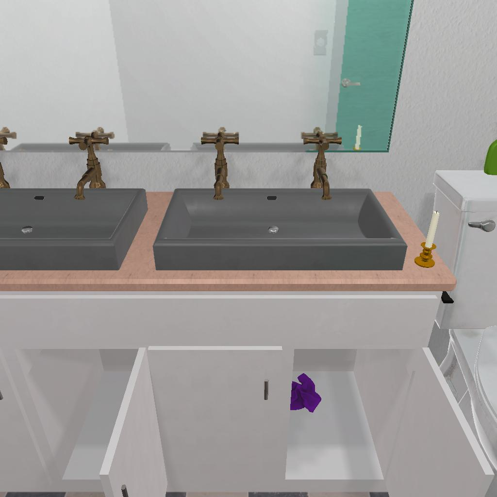

---------------------------------------------------------task: 9---------------------------------------------------------
--------------------------------------------------------------------------------------------------------------------------------------------------------------------
--------------------------------------------------------------------------------------------------------------------------------------------------------------------
Step:--------------------------------------------------------------------------10-------------------------------------------------------------------------------
----------------------------------------
VLM Prompt:
Image1:
Image2:
Image3:
**Instruction**
1. Analyze the provided images to identify all visible household objects and compare the difference between images (e.h. whether the object is opened or not and taken on hand or not), focusing on those relevant to the task description "put some soapbottle on toilet."
2. Use the analysis of images and the task hint "The agent must find an object of the desired type, pick it up, find the correct location to place it, and put it down there." to answer the question: what is the most reasonable action in the choices for the task description "put some soapbottle on toilet"?
3. Decide and write the answer using the template: The answer is: (i): , where i is the real number. If there is no desired object in images, search every place based on **Initial Observation** to find the object. And if no one is exactly correct, choose a similar answer.
**Initial Observation**
You are in the middle of a room. Looking quickly around you, you can see bathtub (1), bathtubbasin (1), toilet (1), cabinet (1-4), sink (1-2), countertop (1), sinkbasin (1-2), toiletpaperhanger (1), towelholder (1), garbagecan (1), handtowelholder (1)
**Answer Choices**
(1): go to bathtub 1
(2): go to bathtubbasin 1
(3): go to toilet 1
(4): go to cabinet 1
(5): go to cabinet 3
(6): go to sink 1
(7): go to sink 2
(8): go to countertop 1
(9): go to sinkbasin 1
(10): go to sinkbasin 2
(11): go to toiletpaperhanger 1
(12): go to towelholder 1
(13): go to garbagecan 1
(14): go to handtowelholder 1
(15): close cabinet 4
(16): take faucet 1 from cabinet 4
(17): take faucet 2 from cabinet 4
(18): take cloth 1 from cabinet 4
(19): take candle 1 from cabinet 4
(20): take spraybottle 1 from cabinet 4
(21): examine cabinet 4
**Answer**
Let's think step by step by following the instructions.
----------------------------------------
----------------------------------------
Original Response:
First, we need to identify all visible household objects in the provided images. Upon examining the images, we can see that there are sinks, faucets, a countertop, a cabinet with one door open revealing a purple cloth, and a candle on the countertop. No soap bottles are visible on the countertop, sink basins, or in the open cabinet.
Next, we analyze the images for any differences between them; however, all three images are identical with no changes in the position or state of any objects. The cabinet door remains open, and the purple cloth is in the same position.
Considering the task description "put some soapbottle on toilet," we need to find a soap bottle first. Since it's not visible in the provided images, we must search other places based on the initial observation. The most relevant locations to search for a soap bottle would be the cabinet or the countertop, as these are typical storage places for such items in a bathroom.
Given the answer choices, the most reasonable action would be to search the cabinet where the soap bottle might be stored. Since cabinet 4 is already open and doesn't contain the soap bottle, we can exclude choices (15), (16), (17), (18), (19), (20), and (21). We should then check the other cabinets.
The answer is: (4): go to cabinet 1
----------------------------------------
----------------------------------------
>>> Refine Original VLM Response and Get Pure Action: go to cabinet 1
----------------------------------------
-----------------------------------------------------------------
Running time: 34.887651205062866 seconds
Total Money: 4.454140000000002
-----------------------------------------------------------------
-----------------------------------------------------------------
Text Observation:You arrive at loc 3. The cabinet 1 is open. On the cabinet 1, you see a faucet 1, a faucet 2, a cloth 1, a candle 1, and a spraybottle 1.
-----------------------------------------------------------------
UNSUCCEED